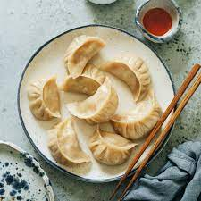

Dumplings

Dumplings traditionally consist of a kneaded dough, molded into
shape and often filled with meats, fruits, and other foodstuffs.
The dumplings has an interation in many cultures spanning trhe globe,
and variations by region are not uncommon.
Ingredients
Steps to Prepare
- Knead dough into desired shape
- Boil in water until firm
- Serve